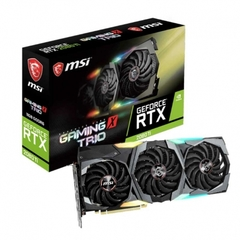
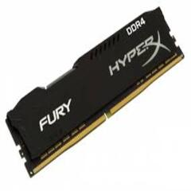
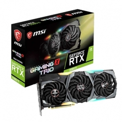
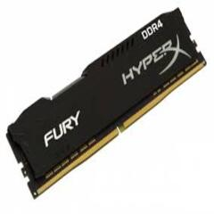

Se le daran a presentar los componentes basicos y necesarios para el funcionamiento correcto en su PC, dando tambien recomendaciones de cada producto de acuerdo a sus necesidades.
Micro-procesador: practicamente el cerebro de la maquina, realiza calculos matematicos que transforma en acciones que se realizaran, entre mas tenga estable su velocidad de envio de los calculos y el voltaje mejor sera el cerebro.
Memoria RAM: siendo tambien un componente esencial para el pc, utilizado para cargar todoas las ordenes del procesador de forma como almacenamiento rapida e inmediato para realizar las ordenes dadas a esta.
Tarjeta de video: siendo un recurso principalmente de ayuda para el procesador, siendo que facilita la manipulacion de los datos del procesador a imagenes que nosotros podemos ver.
Almacenamiento: practicamente algo completamente requerido para un pc, ya que sin este no se podria almacenar informacion de la pc como de otros medios, hay mucha variedad pero la principal es el SSD.
entre otros como la placa base o gabinetes, todo esto con un gran catalogo para gustos de los compradores.
 


